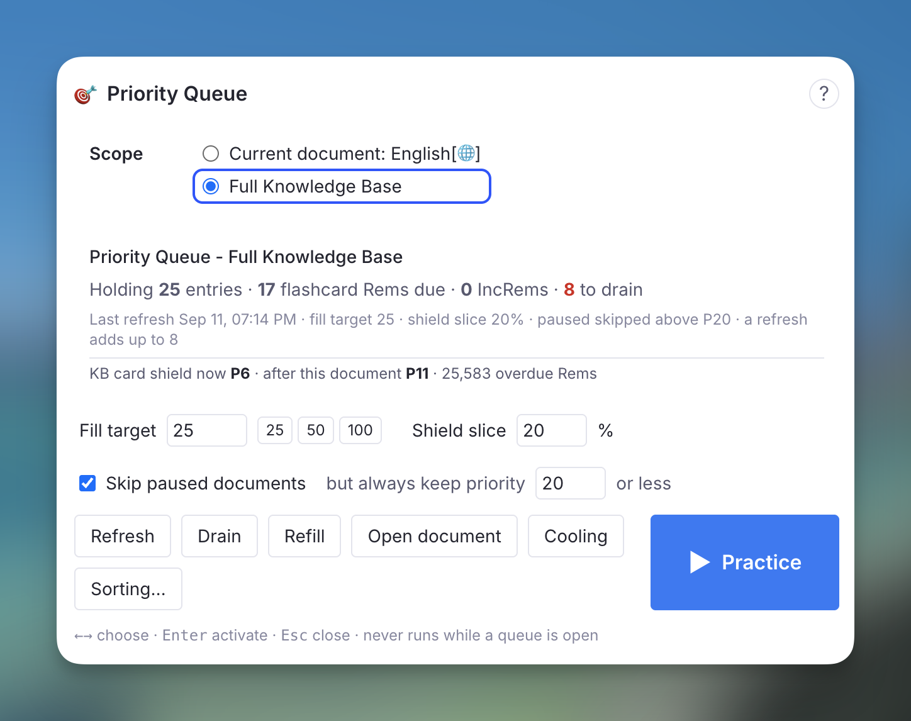
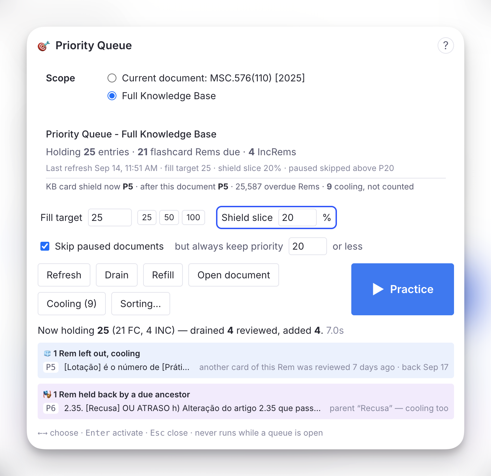
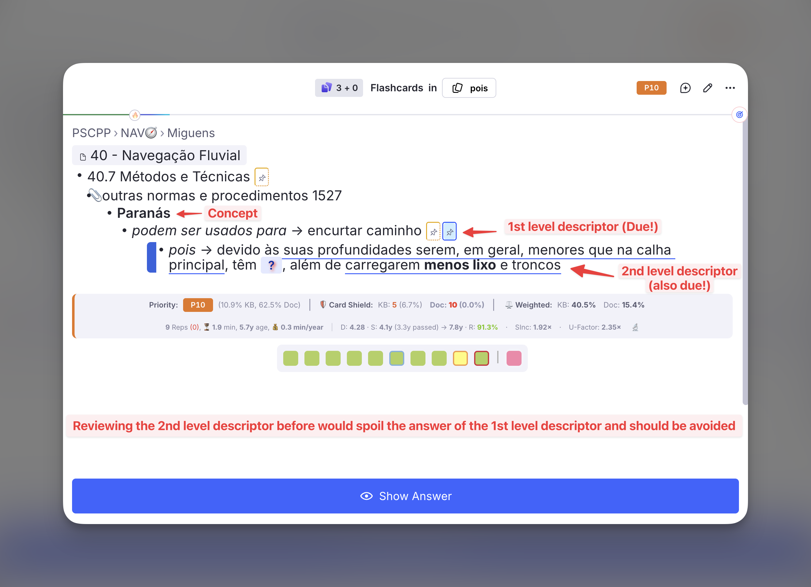
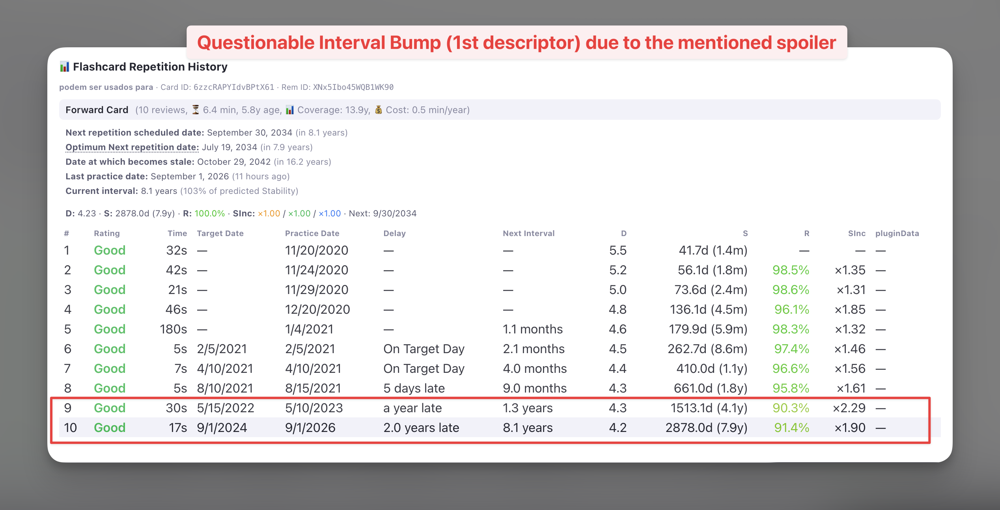
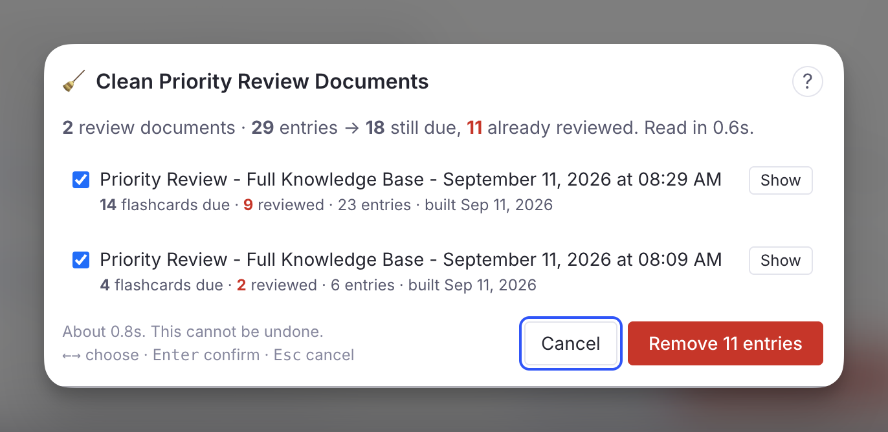

4b. Priority Queue
The Priority Queue solves the "information overflow" problem inherent to Incremental Reading. It is one persistent review document per scope, kept topped up with your highest-priority due material — both Flashcards and Incremental Rems — and drained as you review it, so each session is a short list drawn from the top of your ranking, following your Sorting Criteria.
The Problem: Why do I need this?¶
In the standard RemNote queue, plugins like Incremental RemNote can control when Incremental Rems (articles, videos, notes) appear. However, plugins cannot control the order of standard Flashcards. RemNote's native scheduler decides which flashcard comes next, regardless of the priority you set in this plugin.
This creates a problem when you are overwhelmed. If you have 1000 due flashcards, but only time to review 50, you want to ensure those 50 are your most important ones. In the standard queue, you might spend your time reviewing low-priority trivia while critical exams or project knowledge remains unseen.
The Solution¶
A document made of Rem references to your most important due items bypasses that limitation: practise the document and RemNote serves exactly those cards. The plugin used to build such a document as a one-off, timestamped snapshot. The Priority Queue is the same document kept alive:
- One document per scope — one for your whole knowledge base, one per document or folder you choose — instead of a new one every day.
- Refill tops it up to a fill target (25 items by default) from the current priority ranking.
- Drain removes the entries you have reviewed, and the ones that are cooling.
- Refresh is both, draws the document's IncRems again, and runs on its own when you leave the queue.
Small fills are the point. RemNote serves a document's cards in random order — its queue provider for a normal document is literally named random — so a 100-item document can show its most important card last. The only control a plugin has over what comes first is how few items the document holds. Twenty-five items, most of them the top of your ranking (following your Sorting Criteria), is a session you can finish, and the next refresh prepares the next twenty-five.
The Priority Queue popup¶
Everything happens from one popup: Priority Queue in the Command Palette (quick code prq, shortcut Opt+Shift+L / Alt+Shift+L), the Priority Queue entry in any document's ⋯ menu and in the queue's ⋮ menu, or the Priority Queue button of the Incremental RemNote panel.

- Scope — the document you came from, or the whole knowledge base. The popup opens on the document only when it already has a Priority Queue of its own, and on the whole knowledge base otherwise; the document stays one click away to build one. A review document is never offered as a scope: a queue built from a queue would only re-select what it already holds.
- Status — what the document holds, how many flashcard Rems and IncRems are still due, how many entries a refresh would drain and how many of those are cooling, the last refresh, and the current settings. Below it, the card shield now and after this document — the priority the shield would reach once every entry is reviewed — for the KB or for the document scope, with cooling Rems already excluded.
- Fill target — how many items the document is topped up to.
25,50and100are one click; any number from 5 to 200 works. This is the size of one burst: one session works through one fill, and the refresh at the end prepares the next. Your Flashcard Ratio divides it between flashcard Rems and IncRems. - Shield slice — the share of each fill taken strictly by priority before your randomness applies. See why it exists.
0%follows your Sorting Criteria exactly. - Skip paused documents — leave out flashcard Rems inside paused documents, but always keep the ones at or below the priority you set (20 by default). See Paused Document Filtering.
- Build / Refresh, Drain, Refill, ▶ Practice, Open document, Cooling, Sorting….
None of the actions runs while a queue is open — RemNote gathers a document's cards when you press Practice, so editing the document between sessions is safe and editing it during one is not. The popup says so and waits.
The popup is keyboard-driven: ← → move the selection ring across the controls, Enter activates, Esc closes. Fill target and shield slice are plain number fields; Enter or Esc inside one hands the keys back.
Practise it¶
▶ Practice opens the queue on the document — the same thing as its own Practice button. With no document yet, it builds one first. The ▶ button of the Incremental RemNote panel and the command Learn - Practice Priority Queue (Full Knowledge Base) (Cmd+L / Ctrl+L, quick code learn) do the same for the whole knowledge base from anywhere. Learn is the plugin's main action, as in SuperMemo: open RemNote, press Cmd/Ctrl+L, and study what matters most.
While you practise, the plugin knows where the items came from: the Priority Shield and its history are computed against the original scope (the document you chose, or the whole knowledge base), not against the review document itself. See Smart Scope.
Refresh at startup and after every session¶
When you leave the queue after practising a Priority Queue document, the plugin refreshes it a couple of seconds later: what you reviewed is drained, what is now cooling is drained, and the document is topped back up. A toast reports the result.
When RemNote starts, every Priority Queue document is refreshed once — the full-KB one and each document-scoped one — so the first Practice of the day finds them up to date. This waits for the caches and the cooling scan to finish, and the ▶ button of the plugin panel only starts pulsing once it is done. One toast reports the result for all of them. If you open a queue before it finishes, the documents not yet refreshed are left for later.
Both are the Refresh the Priority Queues at startup and after each session setting, on by default.
In Light Mode, including on mobile, the automatic refresh does not run. Light Mode keeps no card cache, so a refresh there has to read every card in your knowledge base — once, shared by the drain, cooling and the new selection — which is the kind of work Light Mode exists to avoid after every session. Press Refresh or ▶ Practice in the popup instead; both still work, cooling included. In Full Mode a refresh reads no cards at all: everything comes from the card cache.
How Items Are Selected¶
Every refill runs the same selection:
- Filtering: every Flashcard Rem and Incremental Rem in scope that is due (scheduled for today or earlier).
- Ranking: by priority (0 is highest, 100 is lowest), with your randomness applied through the priority-weighted lottery — after the shield slice has been carved off.
- Mixing: each list fills its own slots, interleaved at your Flashcard Ratio — with "10 cards per rem", roughly ten flashcard entries follow each incremental entry.
- Gates, applied to each flashcard Rem as it is drawn, so their cost is bounded by the fill target rather than by the size of your knowledge base: already in the document, paused, due ancestor, cooling, and Card Cluster expansion.
The status block at the top of the document records what each refresh did, and the popup shows the Rems each gate held back, by name, after every action.

Above, a refresh drained 4 reviewed entries and added 4. Under the result line, each gate that held something back gets its own panel, one row per Rem with its priority:
- 🧊 left out, cooling — why the Rem is cooling and the day it comes back: here, another card of the same Rem was reviewed 7 days ago, so it returns on Sep 17.
- 🎭 held back by a due ancestor — the blocking parent or grandparent and what happened to it. Here the parent is itself cooling, so nothing was swapped in and both wait; see Ancestor Spoiler Protection.
Flashcard and IncRem slots¶
The Flashcard Ratio divides the fill target for the whole document: IncRems get one slot for every ratio + 1 items, rounded up, and flashcard Rems the rest. A fill target of 25 at "10 cards per rem" holds 22 flashcard Rems and 3 IncRems. With "no cards" or "no incremental rems", everything goes to the other kind.
The two kinds are refilled differently:
- Flashcard Rems stay until you review them. A refresh only fills the flashcard slots that are empty.
- IncRems are drawn again on every Refresh. The queue injects IncRems at your ratio however many the document holds, so an IncRem that was not reached has no claim on its slot. The draw runs your sorting criteria again, as the regular queue does each session: IncRems drawn again stay where they are, the others leave and are replaced, and they return to the pool of due IncRems for a later draw. An IncRem entry with notes or text of your own on it is never drawn away.
Refill only fills empty slots, and Drain adds nothing. The status block shows the split on its Holding line and what the draw kept and replaced on its Last refresh line.
The shield slice¶
Your randomness setting marks a share of positions across the whole ranked due list, uniformly, and refills each marked position from a priority-weighted draw. It does not carve off the bottom of the list. So the first position is marked exactly as often as the ten-thousandth, and when it is, the most important due Rem is thrown into a pool of thousands and lands far down the list. At 40% randomness that happens to each of your top items four times in ten — see what randomness does not guarantee.
In a 100-item snapshot a displaced top item usually still landed inside the document, just later. In a 25-item fill there is no "later": the item is simply absent until the next refresh, and the Priority Shield stays where it was however hard you work. The shield slice says the lottery may not touch the first positions. With the default 20%, the first 5 of a 25-item fill are the 5 most important due items, and your randomness runs over the other 20. Set it to 0% to follow the Sorting Criteria exactly, or higher to protect more of the head.
The status block and the popup report how many of the added items came from the slice.
The status block and the graph¶
The document's first child is a code block that the refresh rewrites each time: scope, fill target and shield slice, what it holds and how the fill target is split, what the last refresh drained and added and what the IncRem draw kept and replaced, how many Rems are cooling, how many were held back by a due ancestor or skipped as paused, and what is due in scope. Its second child is the Priority Distribution Graph, regenerated on every refresh over the document's current entries — absolute priorities and relative percentiles, IncRems and flashcard Rems — so you can see at a glance how concentrated at the top a fill is, and what your randomness setting does to it.
Entries are always appended below these two, so the graph stays where it is.

Cooling: spoiler protection across sessions¶
RemNote's own bury rule keeps a card out of the queue while another card of the same Rem was seen in the last hour. Anki buries siblings until the next day. Neither is enough for a mature card: a descriptor whose answer was read as context yesterday, or an Alt+Z cloze whose sibling cloze was graded three days ago, is still a free recall — and FSRS rewards a free recall with years of unearned stability, as the ancestor case below shows.
A Rem is cooling when it still owes the queue a card, and a card that gives that answer away was graded recently and has since moved on. While cooling, it is left out of the Priority Queue and it is ineligible to set the Priority Shield — a Rem whose sibling you just reviewed cannot pin the shield at its priority however much else you clear.
What counts as a spoiler¶
Five relations, each a distinct way one review puts another card's answer on screen:
- Another card of the same Rem — the other direction, or another cloze in the same text. RemNote's hour-long bury, extended.
- A sibling
Alt+Zcloze under the same parent extract, or the parent extract itself read as an Incremental Rem. Each cloze quotes the whole sentence with one span blanked, so any one of them shows the others' answers. - One of the Rem's own
Alt+Zclozes, when the Rem carries a card of its own as well. - A child or grandchild card, whose context line displayed this Rem's answer — the ancestor gate extended across time, in the direction that actually spoils.
- Its concept, for a descriptor's backward card. A descriptor's backward card shows the descriptor and asks for the concept it belongs to: the nearest ancestor that is not itself a descriptor, which is a grandparent or higher when descriptors are nested. Reviewing any card of that concept, forward, backward or a cloze in it, puts the answer on screen, so the descriptor waits. RemNote buries this pairing for an hour; cooling extends it for the whole window.
And one rule about the card itself: new cards. A card you have just created and never reviewed cools too, for a fixed number of days counted from the moment the card was created (Cooling: new cards, 1 day by default, up to 10, 0 to turn it off). SuperMemo counts creating an item as its first repetition, so a cloze you wrote while reading is never asked the same day, while its answer is still in view. The date is the card's own: a cloze added today to an old Rem counts as new, and a direction you switch off and back on keeps its original card and history, so it does not. A direction switched on for the first time is a new card.
Card Cluster siblings never cool each other: a cluster is designed to be shown together, and RemNote treats it as one unit. A sibling rated Again that is still due does not cool anything either — RemNote's own rule already separates that pair within the hour.
How long¶
The window belongs to the cooled card and scales with its own interval, because a mature card is both more damaged by a free recall and cheaper to delay:
| Card interval | Cooling |
|---|---|
| a new card | 1 day |
| 10 days | 1 day |
| 60 days | 3 days |
| 200 days | 10 days |
| a year or more | 15 days |
Counted from the moment the spoiling card was seen, not from when the plugin noticed. The three parameters — the share of the interval, the minimum and the maximum — are in the settings.
Nothing is stored¶
The cooling set is recomputed from your card data on every refresh, at every queue exit, and once when RemNote starts — it is a function of what is scheduled and when each card was last shown. In Full Mode both come from the card cache, which records when each card was last shown alongside when it is due; note what the cache cannot see. That is what makes it correct on every device the moment your cards sync, impossible to disagree with reality, and immune to a wipe of the plugin's synced storage. The only thing persisted is what you decide about specific Rems (below), one small record per knowledge base.
The Cooling list¶
Cooling in the popup lists every Rem currently cooling, highest priority first: the reason and when it happened, the day it comes back, and the length of its window. Three actions per Rem:
- Release — stop cooling now. A sibling reviewed later cools it again.
- +7d — keep it cooling a week longer.
- Never — exempt this Rem from cooling for good.
↑ ↓ choose a row, R, E, N act on it, Enter opens the Rem, Esc goes back. Rescan re-judges the 200 highest-priority Rems with due cards on the spot.
The Priority Review Queue in your sidebar¶
Every Priority Queue document is tagged #Priority Review Queue, and that tag Rem lists all of them: open it and the All Tagged Bullets table shows every one, on desktop and on your phone alike. The 👁 button of the panel opens it.
The first time the plugin builds a review document, it pins that tag Rem to your left sidebar. This happens once per knowledge base, ever. If you unpin it, it stays unpinned — the plugin will not put it back. The reason is mobile: the plugin panel is not rendered on a phone, the sidebar is, and a pinned Priority Review Queue is one tap away from a document you refreshed at your desk.
The documents themselves live as children of the tag Rem, so they stay together, and practising the tag Rem still gathers every one of them with its descendants.
Paused Document Filtering¶
RemNote's Deck Status system lets you mark a document (deck) as Paused, which signals that you are temporarily not reviewing material from that source. Without any filtering, due flashcards inside paused documents would still be selected — consuming slots that belong to your active material.
How It Works¶
As each candidate flashcard Rem is pulled into the mixing loop:
- The plugin walks the Rem's ancestor chain looking for a Rem that carries the
Deckpowerup. - If it finds one, it reads the
Statusslot. - If the status is
"Paused", the Rem is skipped and reported — unless its absolute priority is at or below the always keep priority, in which case it is always included.
This check is lazy: it runs for each card as it is drawn, so the number of ancestor walks is bounded by the fill target, not by the number of due cards in your knowledge base.
Both controls sit under the fill target in the popup: the Skip paused documents checkbox, on by default, and but always keep priority … or less, 20 by default. Like the fill target, they are stored on each Priority Queue document, so the full-KB queue and a document-scoped one can differ.
What You See¶
After an action, an amber ⚠️ panel in the popup lists every skipped Rem with its priority. Rems below priority 20 are shown in red, and the header calls them out as HIGH PRIORITY — which only happens once you have lowered the always-keep priority below 20. The status block counts the skipped Rems, and the toast after the automatic refresh says how many were skipped and how many of them were high priority, since no popup is open then.
Ancestor Spoiler Protection¶
A descriptor with flashcards can sit above another descriptor with flashcards. When you practise the child, RemNote shows the parent above the question as context — answer included. If the parent's own card was due too and simply happened to come up later in the session, you have already read its answer: it gets graded as a successful recall it never had to make, and a card with years of accumulated stability walks away with years more.

Above, the card being asked is the second-level descriptor — the stats bar belongs to it, not to the card it is about to give away. The first-level descriptor sits right on top of it with its answer, encurtar caminho, in plain sight, and it was due in the same session. When it came up a few minutes later it was graded Good (Recalled With Effort) in 17 seconds, and its interval went from 1.3 years to 8.1 years — next practice in 2034 — on the strength of a line that had already been read.

The Flashcard Repetition History of that first-level card records the damage. Repetition 10 answered a card a little before (3.3 years since last repetition) the optimum time suggested by its calculated previous 4.1 years stability (Retrievability being estimated at 91.4%), and FSRS read that as a card far stronger than it was: stability 4.1 → 7.9 years, a ×1.90 bump, and a decade of scheduling bought with no retrieval at all. Nothing in the history marks it as unearned — from here on, it is simply what the card knows about itself.
RemNote does not prevent this natively, so the Priority Queue does.
How It Works¶
As each candidate flashcard Rem is drawn, the plugin looks at its parent and grandparent — two levels, the range where the context line still carries an answer rather than a section or document title:
- If neither ancestor has a due card, the Rem is included as normal.
- If one does, the Rem is held back, and the blocking ancestor takes its place in the document.
- When both ancestors are due, the grandparent is the one swapped in — the highest blocker, not the nearest — so releasing it frees the parent for the next refresh, which in turn frees the original card. The tree drains top-down, one level per review.
- If the blocking ancestor is itself cooling, nothing is swapped in: both wait, and the popup says so. While it waits, the child cannot set the Priority Shield either. A child whose due ancestor is not cooling keeps counting, because that ancestor can be reviewed right away.
The swap is the point. Dropping the child on its own would leave the block standing: the parent might not be drawn this time, and the same pair would collide again at the next refresh. Practising the ancestor now is what makes the descendant free next time. The ancestor swapped in may be lower priority than the card it displaced — its priority is beside the point; it is in the way.
Due-ness is read from the ancestor's actual cards, not from the plugin's priority cache, so a flashcard you created minutes ago still protects its descendants. A never-practised card counts as due — the case that matters most, since nothing has been recalled for the descendant to give away.
Entries already in the document are checked too. The draw only looks at a child's ancestors when it first picks the child, so every refresh also checks each flashcard entry the document already holds. A child whose parent or grandparent has come due since it was added is drained, and that ancestor is pulled in ahead of the normal fill, so it is reviewed first. The toast after the automatic refresh counts these, and the status block shows how many ancestors were swapped in.
Once the ancestor has been reviewed, its descendant returns at a later refresh — and that is exactly when the reverse relation takes over: a descendant reviewed recently cools its ancestor, since the descendant's context line showed the ancestor's answer. The two rules are the same rule in the two directions of time.
What You See¶
After an action, a purple 🎭 panel in the popup lists each held-back Rem with its priority, the blocking parent or grandparent, and what happened to that ancestor: swapped in, already in the document, cooling, or unavailable. The status block counts them.
[!NOTE] This check is always on and has no threshold — unlike the paused filter, there is no priority high enough to make reading an answer before recalling it a good trade.
Card Cluster Support¶
RemNote's Card Cluster powerup (activated via /cluster) lets you group closely related flashcards under a shared parent so they are always reviewed together in the queue. When you practice a cluster, RemNote shows the sibling cards in order — the ones before the active card in grey for context, and the remaining ones as empty boxes.
The Problem¶
Without special handling, the selection would pick individual flashcard Rems on priority alone. If a clustered parent had three children — all due — but only one ranked among the top by priority, the other two siblings would be absent from the document. When RemNote encountered that isolated Rem in the queue, it would have no cluster siblings to display, silently breaking the cluster experience.
How the Plugin Handles It¶
A flashcard Rem is a cluster member when its direct parent carries the Card Cluster powerup. The plugin keeps every cluster in the document whole, at three moments:
- When a flashcard Rem is drawn, every sibling with a due card is added with it — cooling or not, since cluster members are meant to be seen together.
- On every Refresh and Refill, each flashcard entry the document holds is checked the same way — entries kept from earlier fills, new ones, and ancestors swapped in — and any due sibling missing from the document is added. A sibling that came due after its cluster entered the document is brought in this way.
- When draining, a cooling cluster member stays while another member of its cluster in the document is due and not cooling. A cluster whose due members are all cooling leaves together.
A sibling held back by a due ancestor is not added: its siblings share that ancestor, so they are held back with it. Siblings whose cards are not due are not added either — RemNote still shows them in the cluster, the earlier ones as context.
| Scenario | Behaviour |
|---|---|
| Only one cluster member meets the priority threshold | All due siblings are pulled in automatically |
| Multiple cluster members independently meet the threshold | Each one triggers the cluster check; no Rem is added twice |
| A sibling comes due after its cluster entered the document | The next Refresh or Refill adds it |
| One cluster member is cooling, another is due | Both stay; the cluster is practised together |
| No cluster members are due | Nothing extra is added |
| Cluster siblings push the total above the fill target | Siblings are still included — a partial cluster would break the queue experience |
The refresh logs what it did: [CardCluster] N clusters in the document: added X due siblings, kept Y cooling members with their cluster, and the status block adds N Card Cluster siblings added.
[!NOTE] Card Cluster is RemNote's built-in powerup with the code
cc, which the Plugin SDK does not list. Until RemNote turned clusters into that powerup (July 2026) they were a tag, and the plugin looked for the tag and for guessed codes; from then on it no longer recognised clusters, and a member could enter the Priority Queue without its siblings. Clusters are recognised byccsince v1.0.114.[!NOTE] The count in the status block reflects the actual number of entries, which may exceed the fill target when cluster siblings are added. This is intentional.
Smart Scope & Priority Shield Integration¶
Even though you are reviewing a generated list, the plugin knows where the items came from.
- Original Scope Awareness: While reviewing a Priority Queue document, the plugin "pretends" you are reviewing the original source.
- Priority Shield: The Priority Shield (the stats below the answer buttons) calculates your protection against the original scope — the document you chose, or the whole knowledge base — never against the review document itself. Example: a Priority Queue scoped to "Biology 101" shows how well you are protecting priorities within "Biology 101".
- Cooling Rems are not counted. A Rem whose spoiler sibling you reviewed recently cannot set the shield, live or in the history graph — the set is recomputed once when RemNote starts and at every queue exit, so the siblings you just reviewed are already accounted for, and the first queue after a restart counts the same Rems as the last one. Neither can a Rem held back because its parent or grandparent is due and cooling: the Priority Queue will not serve it until that window ends.
- Stats Tracking: The history graph records your progress against the original document or the whole knowledge base, keeping your long-term stats accurate.
Cleaning up leftovers¶
The Clean Priority Review Documents command (quick code clean) is the manual counterpart of Drain, across every document tagged #Priority Review Queue at once: it works out which entries still have something due and removes the rest after you confirm, per document. It also handles any timestamped snapshot documents built by earlier versions of the plugin, and offers to delete those once no flashcard in them is due.
A Priority Queue document is never deleted by it — it is emptied and refilled, not thrown away — and the same rules protect your own writing everywhere: an entry with notes written under it, an entry you typed next to, or a bullet of your own in the document is never touched, and a document holding any of these is never deleted.
"Due" here means due at any point up to the end of today, not due at this exact second. A card you answered Forgot an hour ago is sitting in a learning step ten minutes out: it is not due right now, but it is coming back in this very session, and deleting its entry would take it out of the document that is meant to bring it back.

Incremental Rems need the queue to have been opened once
INC entries are judged against the plugin's Incremental Rem cache. If that cache has not been built yet in this session, an unbuilt cache is indistinguishable from every incremental Rem has been reviewed — so the command says so and leaves all INC entries alone. Open the queue once and run it again.
Best Practices¶
- The daily loop: open the popup, press Refresh (or trust the automatic one from your last session), press Practice, finish the fill. Leave the queue; the document is ready again before you are. Repeat as long as you have energy — each fill is the current top of your ranking, and each one raises your Priority Shield.
- The "Overwhelmed" workflow: 1000+ due cards is not a problem the queue can solve by itself. A fill target of 25 or 50 on the full knowledge base is a session you can finish, and finishing it is what moves the shield.
- The "Deep Dive" workflow: to focus on one project, open that document, pick it as the scope, and work through its Priority Queue until the document-scoped shield reads clear.
- Watch the Cooling list. It is the list of Rems the plugin is deliberately not asking you about. If a Rem there surprises you, Release it.
- Maintain Priority Hygiene: to make sure the Priority Queue catches your most critical content, set priorities on your key documents and flashcards, and run "Update all inherited Card Priorities" periodically (e.g., weekly), so every flashcard — even those you haven't manually touched — inherits the correct priority from its parent document.
Technical: Card State Detection¶
This section documents how the plugin distinguishes between active, paused, and disabled flashcard rems, which RemNote SDK call to use for each, and exactly where the plugin applies (or omits) the resulting filters.
Card States in RemNote¶
| State | Description | How to detect |
|---|---|---|
| Active | Card is in the normal review cycle. nextRepetitionTime is a future timestamp. |
card.nextRepetitionTime > Date.now() |
| Due | Card is overdue or due today. nextRepetitionTime is a past timestamp. |
(card.nextRepetitionTime ?? Infinity) <= Date.now() |
| Disabled | Card has been explicitly disabled by the user (toggle off). nextRepetitionTime is null. |
card.nextRepetitionTime === null |
| Paused (deck) | The card's source document has been paused via the Deck Status system. The card itself still has a valid (often past-due) nextRepetitionTime. |
Walk ancestor chain: find the rem with hasPowerup(BuiltInPowerupCodes.Deck), read getPowerupProperty(BuiltInPowerupCodes.Deck, 'Status') → "Paused" |
Key API Behaviour¶
plugin.card.getAll() returns all cards in the knowledge base, regardless of state — active, due, disabled, and paused-deck cards alike. This is the call used when building the priority cache at startup, and the one read the cooling scan pays once per refresh.
rem.getCards() returns the cards for a specific rem but behaves differently depending on rem state:
- For a normal rem: returns the rem's cards as expected.
- For a rem inside a paused document: returns
[]— the SDK silently suppresses the cards. This makesrem.getCards()an unreliable source for building the full card universe; useplugin.card.getAll()instead. - For a rem with disabled cards: also returns
[].
How the Plugin Handles Each State¶
Disabled cards (nextRepetitionTime === null)¶
Disabled cards are implicitly excluded everywhere the plugin evaluates "due cards". The pattern:
maps null to Infinity, so a disabled card never satisfies the <= now condition. This is an implicit exclusion — there is no explicit disabled-card filter — but it produces the correct result in every context where the plugin counts or selects due cards.
| Where | Effect on disabled cards |
|---|---|
Due-card priority cache (card_priority/index.ts) |
Excluded — ?? Infinity never satisfies <= now. Not counted in dueCards or dueCardsOverdue. |
getDueCardsWithPriorities |
Excluded — uses the same ?? Infinity filter to build the remDueCardCount map. |
| Priority Queue selection | Excluded — flows through getDueCardsWithPriorities, so they never reach the mixing loop. |
| Cooling | A disabled card cannot be spoiled (never due) and, having no viewing after it was disabled, does not spoil. |
| Priority Shield (widget) | Excluded from due count; cached dueCards field is always 0 for disabled cards. |
Paused-deck cards (nextRepetitionTime is a valid past timestamp)¶
Paused cards do have a valid nextRepetitionTime in the past, so they pass the <= now filter and are treated as due unless explicitly checked. The plugin uses the ancestor-chain walk described above (isInPausedDocument) to detect them.
| Where | Effect on paused-deck cards |
|---|---|
| Due-card priority cache | Included — nextRepetitionTime is valid, so the ?? Infinity filter does not exclude them. Their CardPriorityInfo entry enters the cache, stamped paused by the paused-deck scan. |
| Priority Shield (widget) | Suppressed through the paused stamp. |
| Priority Queue selection | Filtered out via the lazy isInPausedDocument ancestor walk. Rems at or below the always-keep priority (20 by default) bypass the filter and are always included. |
Why rem.getCards() Is Not Used for Paused Detection¶
A paused rem returns [] from rem.getCards(), which looks identical to a disabled rem or simply a rem with no cards. There is no way to distinguish between these three cases from the return value alone. The Deck powerup Status slot is the authoritative signal for pause state, and the ancestor walk is the only reliable way to retrieve it.
Source References¶
| File | Topic |
|---|---|
src/lib/priority_review_document/select.ts |
The selection: ranking, shield slice, mixing, and the four gates |
src/lib/priority_review_document/queue_doc.ts |
The persistent document: find-or-create, refresh / drain / refill, status block, Practice route |
src/lib/priority_review_document/cooling.ts |
The cooling rule, pure and fixture-tested (npm test) |
src/lib/priority_review_document/cooling_gather.ts |
Turning cards and the tree into the facts the rule judges |
src/lib/priority_review_document/clean.ts |
Drain, and the Clean command |